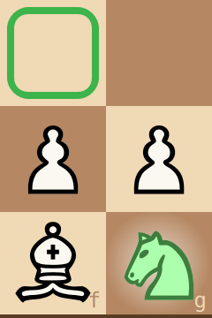
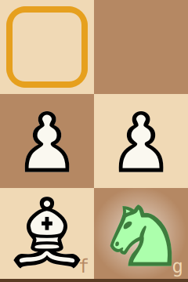
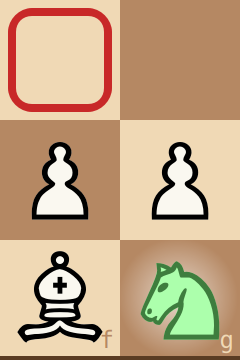

Buster Coach is a chess opponent with a coach beside you. You play a real game against the opponent (Buster, unless you choose another engine), and while you think, the coach looks at your options with you. It never plays for you. It answers when you ask, and, if you want it to, warns you when something is wrong. Just like for the opponent, you can select another engine to drive the coach.
To move: click one of your pieces, then the square it should go to.
Three things worth knowing from the start:
The box. When you've picked up a piece, a box follows the mouse over the board: it marks the move you're pointing at. At Full coaching the box takes a colour: green for the best move, amber for a playable one, red for a mistake.



Lingering asks a question. Keep the mouse still on a piece or a move for a moment, and the coach answers in the cards under the move list: why the move is good or bad, and what would follow.
Choose how much help you want in the Coaching menu, from Tournament (none at all) to Full coaching (everything). And choose your opponent's strength on the slider in its strip, from 1 · Beginner to 10 · Full strength.
More: